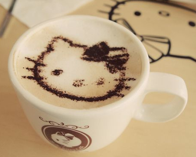
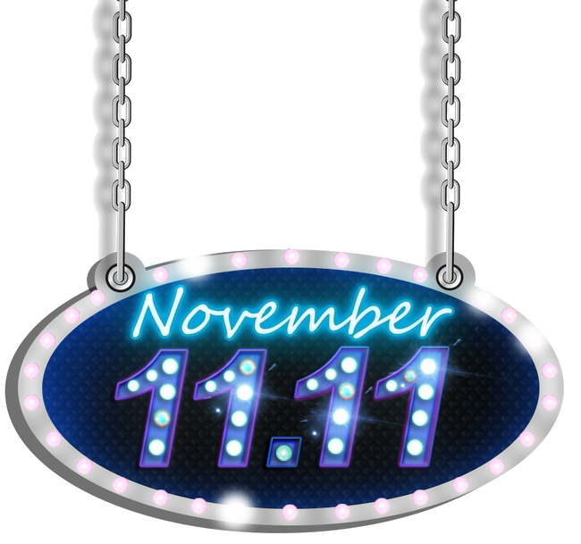
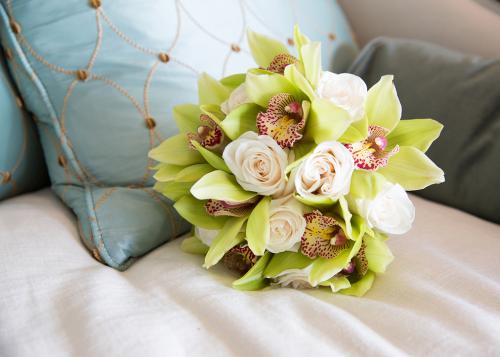

2017双十博客上线，一切是新的起点，新的开始。只记录记不住的--知识。追求简单，醒目。留下一些风景，一些足迹，一些感慨！！！有志者，事竟成。破釜沉舟百二秦关终属楚。苦心人，天不负。卧薪尝胆三千越甲可吞吴。
最新文章
模板排行
博主推荐
-
重庆游乐园一日游
重庆游乐园一日游...
-
巴中光雾山 童话世界 人间仙境
光雾山风景区:国家AAAA级旅游景区、国家重点风景名胜区、国家地质公园,被誉为“清凉氧吧”、“中国红...
-
阳光正好，微风不燥
阴雨绵绵总算过去，一缕阳光照耀，冲刷昔日的阴霾...
-
开心笑段,有点逗B有点二
二营长，你他娘的意大利。。。面呢，端上来让我尝尝！有哪些可以一个人玩而且推理性很强的游戏？我刚才想干...
-
有意思的句子：考试真是so esay，哪里不会考哪里
考试真是so esay，哪里不会考哪里。考试不是谈恋爱，请不要眉目传情；考试不是DOTA，请不要团队...
-
励志说说带图片：累了想想灰太狼，想想光头强
 拥有希望，也许会失望，但放弃希望，却一定绝望...
-
11.11
 今天是什么？？？节日？？？单身汪的节日？？？然后呢……双十一啊，意味着什么呢？？？购物，shoppi...
-
搞笑的gif图片
搞笑的gif图片，收集乐趣，传播乐趣。...
-
lol s7全球比赛
lol s7全球比赛，决赛在鸟巢举行，RNG进军4强，EDG止步16强...
-
DarryRing语录
 爱情需要表达，为爱人沏一杯热茶，给爱人掖好被角，跟爱人开一个小玩笑。当然。 茶可能烫了，被角可能...